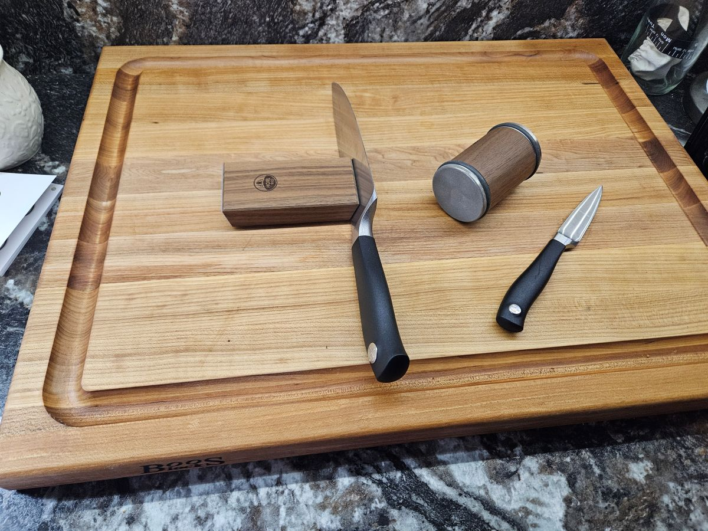

Hi. My name is Brian Travelstead. I have recently returned to school to pursue a degree in web development. My background is in the culinary arts and food service industry. I have worked in a variety of kitchens over the past 20 years, from fast food to fine dining. Cooking has always been a passion of mine, and I enjoy trying new foods and experimenting with new recipes in my free time (whatever that is).
